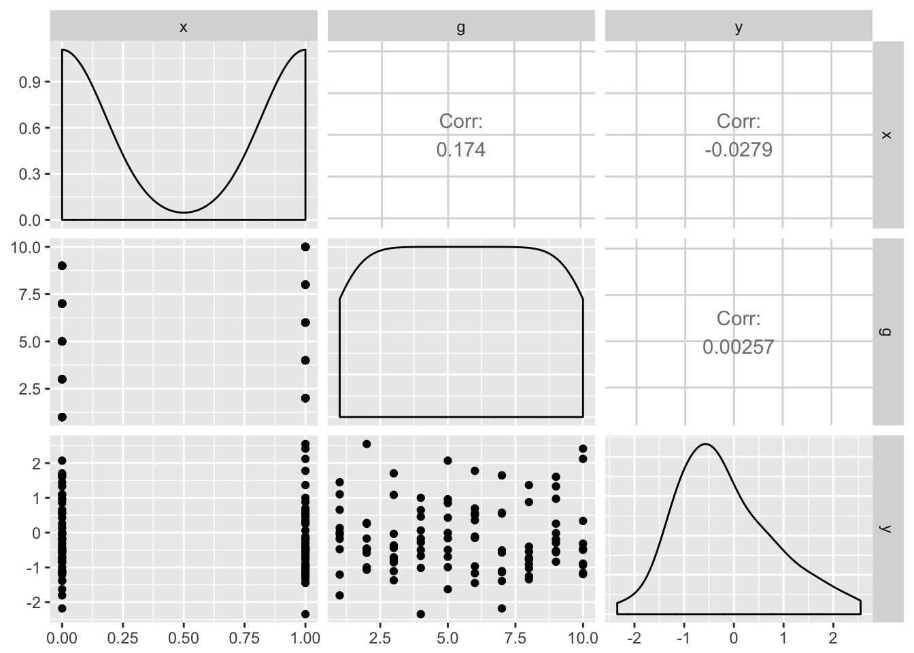

15 Power analysis in R
For most inferential statistics
If you want to do power analysis for a standard statistical test, e.g. t-tests, chi2 or Anova, the pwr:: package is what you need. This guide has a good walkthrough.
For multilevel or generalised linear models
If you’d like to run power analyses for linear mixed models (multilevel models) then you need the simr:: package. It has some neat features for calculating power by simulating data and results from a model you specify.
To take a simple example, let’s fabricate some data where outcomes y are nested within groups g, and where there is a covariate of interest x. That is, we are interested in estimating our power to detect an effect of x.
Note though that in this simulated data, we create outcomes (y) with no relationship to x, and no clustering by g at this stage (i.e. y, x and g are uncorrelated).
set.seed(1234)
simulated.df <- data_frame(
x = rep(0:1, 50),
g = rep(1:10, 10),
y = rnorm(100)
)
GGally::ggpairs(simulated.df)
To use simr:: we first run our ‘model of interest’. In this case it’s a random-intercepts multilevel model. We can verify x is unrelated to outcome with lmerTest::anova:
library(lmerTest)
##
## Attaching package: 'lmerTest'
## The following object is masked from 'package:lme4':
##
## lmer
## The following object is masked from 'package:stats':
##
## step
model.of.interest <- lmer(y ~ x + (1|g), data=simulated.df)
anova(model.of.interest)
## Analysis of Variance Table of type III with Satterthwaite
## approximation for degrees of freedom
## Sum Sq Mean Sq NumDF DenDF F.value Pr(>F)
## x 0.077811 0.077811 1 98 0.07641 0.7828The next step is to modify our saved model of interest. We tweak the fitted parameters to represent our predicted values for effect sizes, variances, and covariances.
First, let’s change the ‘true’ effect of x to be 0.2:
fixef(model.of.interest)['x'] <- .2We now use the powerSim function to use our tweaked model to:
- create a dataset using the parameters of our model (i.e. make random draws of
ywhich relate togandxas specified in the model summary). - re-run
lmeron this simulated data. - repeat this hundreds or thousands of times
- count how many times (i.e., for what proportion) we get a significant p value
power.sim <- powerSim(model.of.interest, nsim=100)
## Simulating: | |Simulating: |= |Simulating: |== |Simulating: |=== |Simulating: |==== |Simulating: |===== |Simulating: |====== |Simulating: |======= |Simulating: |======== |Simulating: |========= |Simulating: |========== |Simulating: |=========== |Simulating: |============ |Simulating: |============= |Simulating: |============== |Simulating: |=============== |Simulating: |================ |Simulating: |================= |Simulating: |================== |Simulating: |=================== |Simulating: |==================== |Simulating: |===================== |Simulating: |====================== |Simulating: |======================= |Simulating: |======================== |Simulating: |========================= |Simulating: |========================== |Simulating: |=========================== |Simulating: |============================ |Simulating: |============================= |Simulating: |============================== |Simulating: |=============================== |Simulating: |================================ |Simulating: |================================= |Simulating: |================================== |Simulating: |=================================== |Simulating: |==================================== |Simulating: |===================================== |Simulating: |====================================== |Simulating: |======================================= |Simulating: |======================================== |Simulating: |========================================= |Simulating: |========================================== |Simulating: |=========================================== |Simulating: |============================================ |Simulating: |============================================= |Simulating: |============================================== |Simulating: |=============================================== |Simulating: |================================================ |Simulating: |================================================= |Simulating: |================================================== |Simulating: |=================================================== |Simulating: |==================================================== |Simulating: |===================================================== |Simulating: |====================================================== |Simulating: |======================================================= |Simulating: |======================================================== |Simulating: |========================================================= |Simulating: |========================================================== |Simulating: |=========================================================== |Simulating: |============================================================ |Simulating: |=============================================================|
power.sim
## Power for predictor 'x', (95% confidence interval):
## 11.00% ( 5.62, 18.83)
##
## Test: unknown test
## Effect size for x is 0.20
##
## Based on 100 simulations, (0 warnings, 0 errors)
## alpha = 0.05, nrow = 100
##
## Time elapsed: 0 h 0 m 26 sOur observed power (proportion of times we get a significant p value) is very low here, so we might want increase our hypothesised effect of x, for example to see what power we have to detect an effect of x = .8:
fixef(model.of.interest)['x'] <- .8
power.sim <- powerSim(model.of.interest, nsim=100)
## Simulating: | |Simulating: |= |Simulating: |== |Simulating: |=== |Simulating: |==== |Simulating: |===== |Simulating: |====== |Simulating: |======= |Simulating: |======== |Simulating: |========= |Simulating: |========== |Simulating: |=========== |Simulating: |============ |Simulating: |============= |Simulating: |============== |Simulating: |=============== |Simulating: |================ |Simulating: |================= |Simulating: |================== |Simulating: |=================== |Simulating: |==================== |Simulating: |===================== |Simulating: |====================== |Simulating: |======================= |Simulating: |======================== |Simulating: |========================= |Simulating: |========================== |Simulating: |=========================== |Simulating: |============================ |Simulating: |============================= |Simulating: |============================== |Simulating: |=============================== |Simulating: |================================ |Simulating: |================================= |Simulating: |================================== |Simulating: |=================================== |Simulating: |==================================== |Simulating: |===================================== |Simulating: |====================================== |Simulating: |======================================= |Simulating: |======================================== |Simulating: |========================================= |Simulating: |========================================== |Simulating: |=========================================== |Simulating: |============================================ |Simulating: |============================================= |Simulating: |============================================== |Simulating: |=============================================== |Simulating: |================================================ |Simulating: |================================================= |Simulating: |================================================== |Simulating: |=================================================== |Simulating: |==================================================== |Simulating: |===================================================== |Simulating: |====================================================== |Simulating: |======================================================= |Simulating: |======================================================== |Simulating: |========================================================= |Simulating: |========================================================== |Simulating: |=========================================================== |Simulating: |============================================================ |Simulating: |=============================================================|
power.sim
## Power for predictor 'x', (95% confidence interval):
## 95.00% (88.72, 98.36)
##
## Test: unknown test
## Effect size for x is 0.80
##
## Based on 100 simulations, (0 warnings, 0 errors)
## alpha = 0.05, nrow = 100
##
## Time elapsed: 0 h 0 m 27 sWe might also want to set one of the variance parameters of our model to represent clustering within-g. First we can use VarCorr() to check the variance parameters of the model we just ran:
VarCorr(model.of.interest)
## Groups Name Std.Dev.
## g (Intercept) 1.1165e-08
## Residual 1.0091e+00And we could simulate increasing the variance parameter for g to 0.5:
VarCorr(model.of.interest)['g'] <- .5
power.sim <- powerSim(model.of.interest, nsim=100)
## Simulating: | |Simulating: |= |Simulating: |== |Simulating: |=== |Simulating: |==== |Simulating: |===== |Simulating: |====== |Simulating: |======= |Simulating: |======== |Simulating: |========= |Simulating: |========== |Simulating: |=========== |Simulating: |============ |Simulating: |============= |Simulating: |============== |Simulating: |=============== |Simulating: |================ |Simulating: |================= |Simulating: |================== |Simulating: |=================== |Simulating: |==================== |Simulating: |===================== |Simulating: |====================== |Simulating: |======================= |Simulating: |======================== |Simulating: |========================= |Simulating: |========================== |Simulating: |=========================== |Simulating: |============================ |Simulating: |============================= |Simulating: |============================== |Simulating: |=============================== |Simulating: |================================ |Simulating: |================================= |Simulating: |================================== |Simulating: |=================================== |Simulating: |==================================== |Simulating: |===================================== |Simulating: |====================================== |Simulating: |======================================= |Simulating: |======================================== |Simulating: |========================================= |Simulating: |========================================== |Simulating: |=========================================== |Simulating: |============================================ |Simulating: |============================================= |Simulating: |============================================== |Simulating: |=============================================== |Simulating: |================================================ |Simulating: |================================================= |Simulating: |================================================== |Simulating: |=================================================== |Simulating: |==================================================== |Simulating: |===================================================== |Simulating: |====================================================== |Simulating: |======================================================= |Simulating: |======================================================== |Simulating: |========================================================= |Simulating: |========================================================== |Simulating: |=========================================================== |Simulating: |============================================================ |Simulating: |=============================================================|
power.sim
## Power for predictor 'x', (95% confidence interval):
## 33.00% (23.92, 43.12)
##
## Test: unknown test
## Effect size for x is 0.80
##
## Based on 100 simulations, (0 warnings, 0 errors)
## alpha = 0.05, nrow = 100
##
## Time elapsed: 0 h 0 m 26 sBecause the amount of clustering in our data has increased our statistical power has gone down. This is because, when clustering is present, each new observation (row) in the dataset provides less new information to estimate our treatment effect. Note that in this example we increased the variance associated with g by quite a lot: setting the variance of g to 0.5 equates to an ICC for g of .33 (because .5 / (.5 + 1) = .33; see the section on calculating ICCs and VPCs)
For more details of simr see: http://onlinelibrary.wiley.com/doi/10.1111/2041-210X.12504/full
Note that for real applications you would want to set nsim to something reasonably large. Certainly at least 1000 simulations, and perhaps up to ~5000.